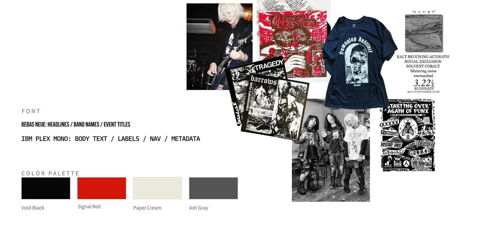
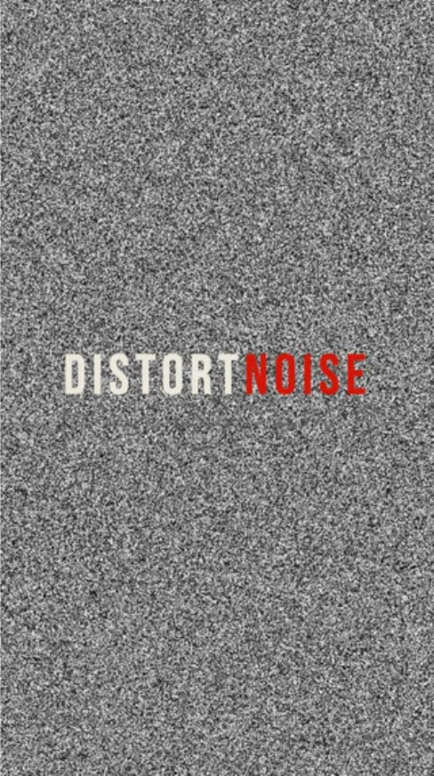
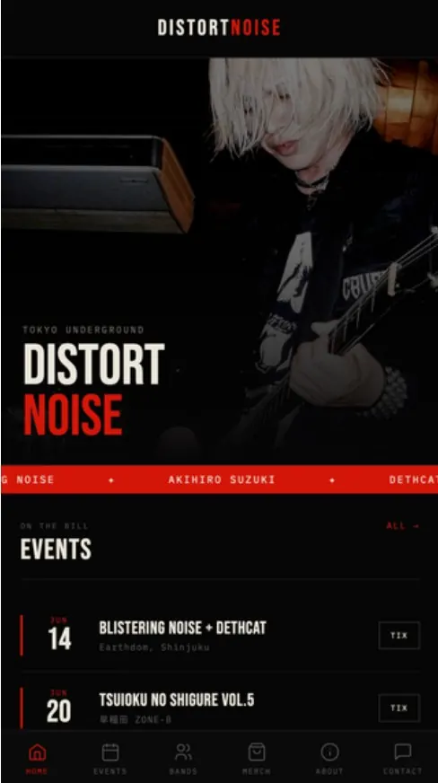
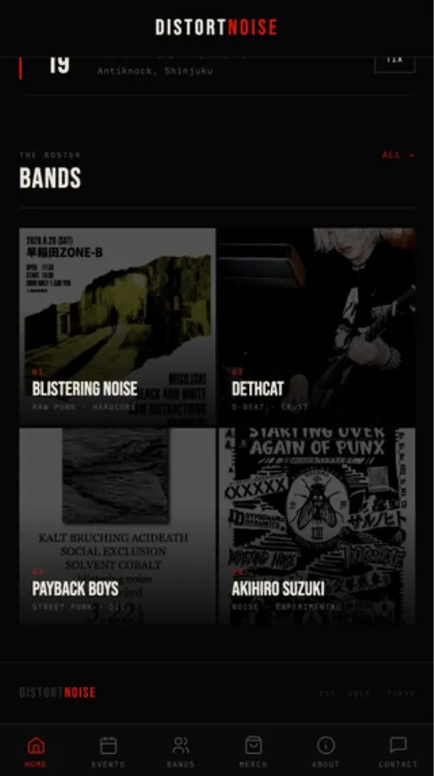
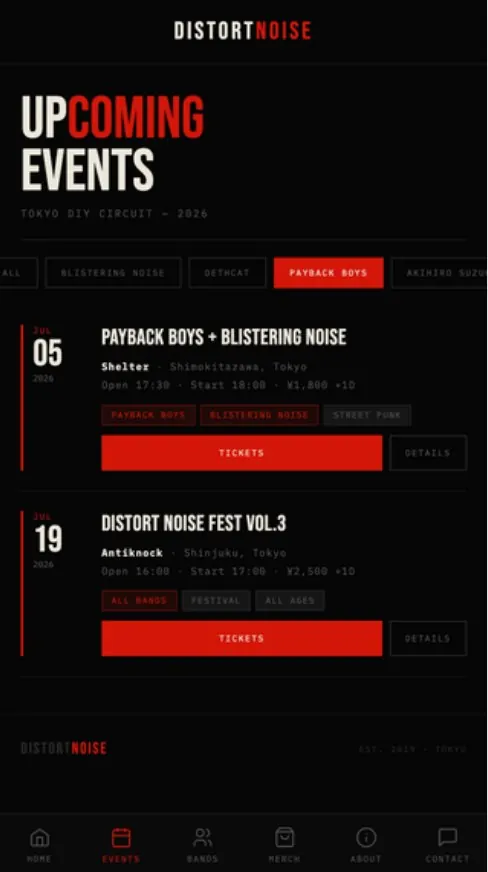
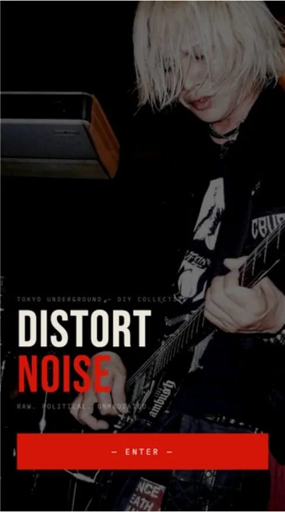
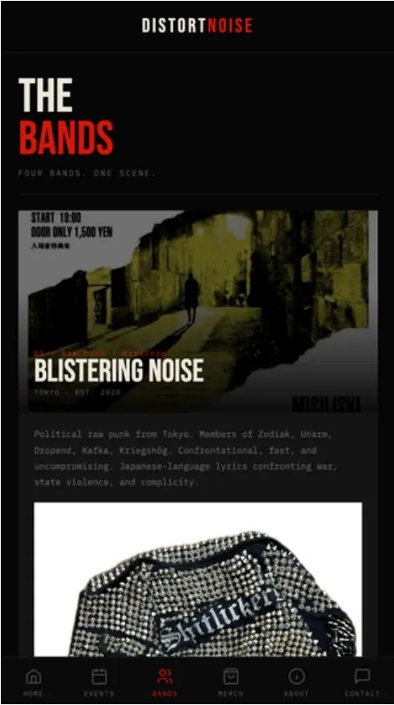
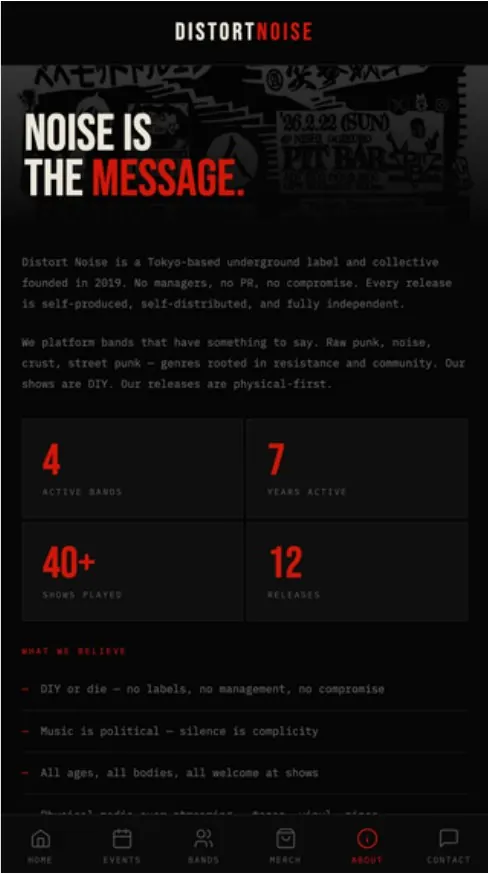
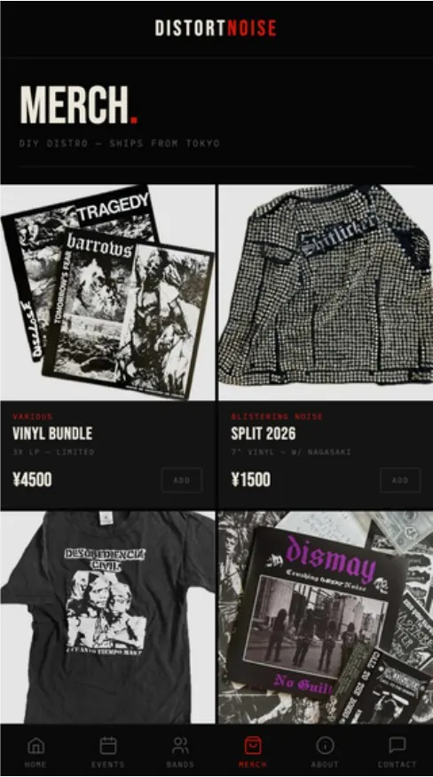
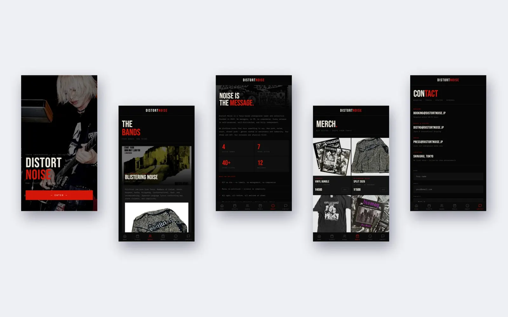

01
Concept
Bands, merch, events and artists in one app, drawn from flyers, zines and band merch. Bebas Neue for headlines, IBM Plex Mono for everything else, four colours.

02
Bands, events, merch and artists in one app

Overview
An app for a Tokyo underground label and collective: one place for its bands, gigs, merch and contact, designed in Illustrator and built with Claude Code.
BriefBring a label's bands, merch, events and artists into one app that still feels like the scene it comes from.
ApproachThe visual language is drawn from flyers, zines and band merch. Bebas Neue carries headlines, band names and event titles; IBM Plex Mono carries body text, labels, navigation and metadata.
4 steps
Bands, merch, events and artists in one app, drawn from flyers, zines and band merch. Bebas Neue for headlines, IBM Plex Mono for everything else, four colours.

A static-noise loading screen that resolves into the landing page.



Gigs and bands as lists you can scan in seconds, the way a flyer reads.


Ten screens in all, then built as a working app with Claude Code.



